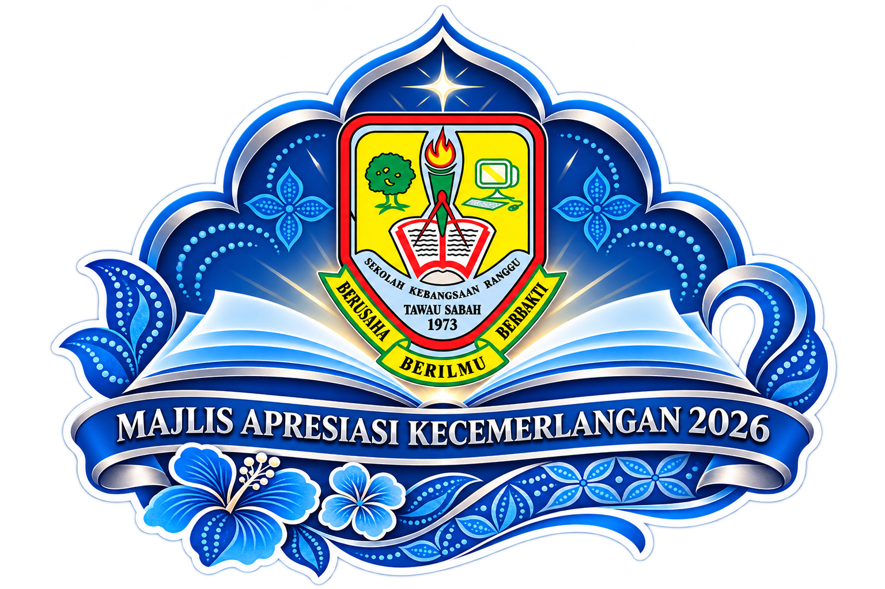

SENARAI UNTUK AJK FOTO

Gambar & nama
yang perlu dilengkapkan.
Murid penerima yang masih memerlukan gambar atau pengesahan nama, bersama anugerah dan perkara yang perlu dilengkapkan.
Buka folder gambar MAK 2026MURID PENERIMA
Senarai yang perlu dilengkapkan
Rekod semakan 20 November 2026, 3.30 petang.
Senarai tidak dapat dimuatkan. Sila muat semula laman.
Rujukan nama & kelas: data murid 17 November 2026. “Gambar diperlukan” bermaksud gambar belum dapat dipadankan dalam rekod semakan Drive; gambar mungkin tersedia dengan nama fail lain. Gambar baharu dipadankan dengan nama penuh atau foto rujukan. Pastikan ejaan nama fail dan kelas betul.